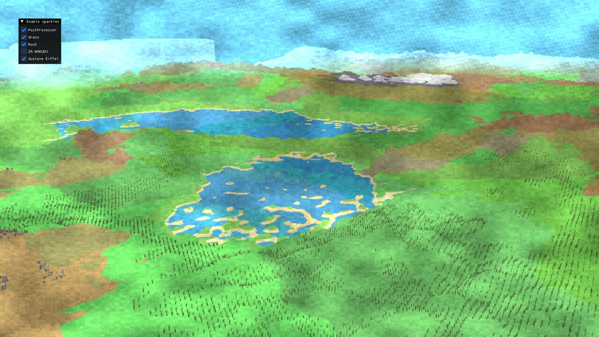
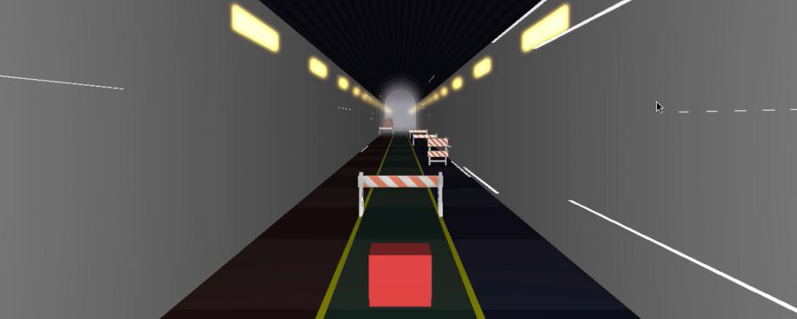
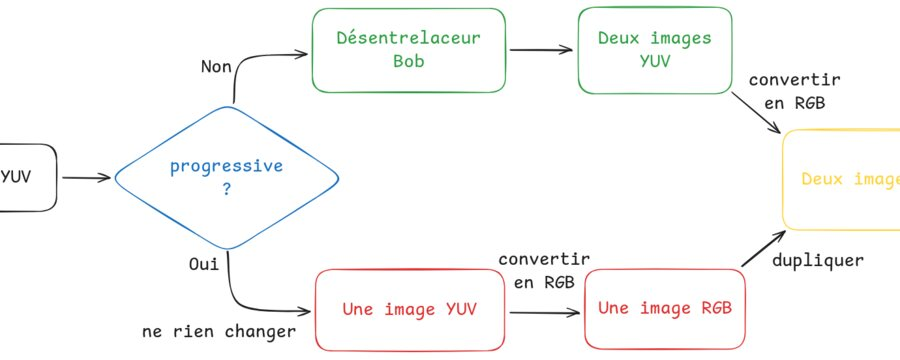

Rendu & 3D
OpenGL, GLSL, raytracing, génération procédurale et scènes temps réel.
C++ · GPU · Rendu · Simulation · Imagerie
Ingénieur logiciel junior orienté imagerie médicale, rendu 3D et traitement d'image.
Bientôt diplômé de l'EPITA, je développe des projets en C++, CUDA, OpenGL/WebGL et traitement d'image, avec un intérêt particulier pour le rendu, la simulation et l'imagerie médicale.
Profil
Spécialisé en traitement d'image, synthèse d'image et simulation graphique, j'ai une expérience R&D chez GE HealthCare sur des preuves de concept visant à rendre les interactions d'un viewer médical plus rapides, plus intelligentes et plus efficaces pour les radiologues.
Mes projets personnels et académiques couvrent le C++ moderne, OpenGL, CUDA, le traitement vidéo/image, les compilateurs expérimentaux, les outils TypeScript et les notebooks de data ou d'imagerie. L'objectif récurrent : transformer des sujets techniques complexes en logiciels utilisables, mesurables et démontrables.
OpenGL, GLSL, raytracing, génération procédurale et scènes temps réel.
CUDA, filtres, primitives parallèles, vidéo et traitements bas niveau.
Interfaces TypeScript, Canvas, tests, intégration et prototypage R&D.
Compétences
C++, C, Python, Java, C#, TypeScript, JavaScript, CUDA, SQL, Bash, OCaml, Lisp.
OpenGL, WebGL, GLSL, Canvas 2D, raytracing, rendu temps réel, génération procédurale.
CUDA, kernels, réduction, scan, histogrammes, optimisation et analyse de performance.
Traitement d'image, filtrage, YUV/RGB, désentrelacement, simulation et notebooks d'imagerie.
React, Vite, Node.js, HTML/CSS, APIs, Docker, AWS, Git, Linux, GitLab CI/CD.
Prototypage R&D, architecture MVC, tests, revue de code, pédagogie et analyse de données.
Projets mis en avant

Terrain généré par compute shader avec bruit fractal, masques de lacs et montagnes, geometry shaders pour les détails et post-processing stylisé.
Éditeur visuel web avec pan, zoom, rotation, création d'objets, sélection, animation et suppression clavier.
Filtres GPU appliqués à l'image : flou gaussien, NLMeans, flou sélectif et expérimentations de détection de mouvement.
Moteur de rendu hors-ligne avec scènes, caméra, lumières, sphères, textures et vecteurs 3D.
Simulation physique avec grille décalée, particules, caméra, lumières et pipeline de rendu réutilisant des briques de raytracing.

Jeu 3D type endless runner avec environnement, obstacles, assets et shaders dédiés.

Pipeline C++ autour de la lecture YUV/RGB, conversion, désentrelacement, options et tests unitaires.
Projet académique de compilation avec AST, passes d'analyse, bibliothèques utilitaires et infrastructure de tests dans un codebase C++ conséquent.
Autres projets / Labs
Nettoyage GPU avec réduction, scan, histogrammes et variante industrialisée.
Génération procédurale de labyrinthe, déplacement joueur et sortie à trouver.
Expérimentations autour du direct lighting, BRDF, tone mapping et image-based lighting.
Travaux avec caméra, rendu, objets, shaders, ImGui et organisation CMake.
Projet graphique fondé sur une bibliothèque de programmation 3D et des scènes animées.
Chargement, pré-traitement et recalage d'images médicales.
Graphes pondérés et recherche de parcours optimaux sur données urbaines.
ETL, stockage et visualisation de données de marché avec séparation des services.
Projet multi-service avec backend Java, front TypeScript, scripts Python, Docker et tests.
Exercices algorithmiques en OCaml et résolution de problèmes.
Dépôt GitHubImplémentation simple du morpion en Common Lisp.
Dépôt GitHubTPs C++ autour du codage, de l'amélioration et de la mesure de qualité d'images.
Parcours
GE HealthCare · équipe Imagine Fabric
EPITA
JuneCare
Formation
École d'ingénieurs en informatique
Sept. 2020 - juil. 2026 · spécialisation image, traitement d'image et simulation graphiqueSemestre international en ingénierie informatique
Févr. 2023 - juil. 2023 · Ajman, Émirats arabes unisFrançais natif, russe courant, anglais C1
Prologin / Girls Can Code
Transmission et ateliers pédagogiques autour de l'informatiqueContact